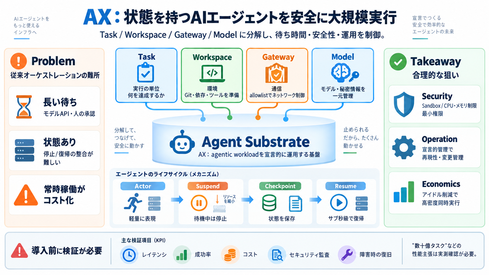

Agent Substrate available on GKE | Google Cloud Blog
High efficiency: Idle actors are suspended and unscheduled in hundreds of milliseconds, freeing up compute resources. O…

AXは、状態を持つAIエージェントを安全に、大規模に実行するための基盤です。Task・Workspace・Gateway・Modelに分解して、運用を“基盤プリミティブ”で吸収します。
エージェントは長時間停止・再開（モデルAPI待ち・人の承認待ち）を起こします。従来のマイクロサービス型オーケストレーションでは、分離・再開・コスト効率が課題になります。
アイドル時間が発生し、常時稼働がコスト化
停止/復帰で整合性と安全性を担保しづらい
AXはエージェント運用を4つのプリミティブに切り分けます。各実行を、隔離・通信・モデル/秘密情報の統合で“安全に宣言”します。
実行の単位（何を達成するか）
環境セットアップ（Git/依存/ツール等）
通信許可リストでネットワーク制御
モデル設定・秘密情報を一元管理
中心にあるAgent Substrateは、軽量なactorとして各タスクを扱います。モデル応答やツール呼び出し待ちのアイドル中はサスペンドし、復帰を高速化します。
タスクを軽量に表現
待機で停止→復帰（サブ秒級）
状態の保存で再開を整える
AXはサンドボックス隔離とCPU/メモリ制限、ネットワークフェンス（allowlist）で危険な実行リスクを抑えます。未検証コードでも被害範囲を小さくしやすくする設計です。
隔離実行で外部への波及を抑制
CPU/メモリ制限で暴走を抑える
通信先をホスト/ポートで許可制御
Modelで秘密情報を一元注入
Task/Workspace/Gateway/Modelで“何を・どこで・どう通信し・どのモデルを使うか”を明確化します。変更管理（環境・鍵ローテーション・モデル更新）と見通しを改善します。
構成が分離され、意図と依存関係が追跡しやすい
（設定の見通し / 再現性）
安全性・依存関係・モデル資材が絡んでも整理できる
（運用負債の低減）
エージェントはモデル応答待ちや人の承認待ちで停止しがちです。AXはサスペンド/レジュームとチェックポイントで“アイドルコスト”を削減し、同時実行密度を上げます。
モデル/人待ちが支配的になりやすい
待機中はリソース維持を最適化
サブ秒級で再開してスループット向上
Workspaceを自然言語で説明すると、自動的に準備・検証する「Generative workspaces」が述べられています。研究・プロトタイピングの環境構築ボトルネックを下げます。
目的を自然言語で渡す
依存・ツールチェーンを準備し検証
AXは「Billions of tasks（数十億タスク）」までスケールすることを強調しています。軽量actorとサスペンド/復帰の組み合わせで、オーケストレーションのボトルネックを回避する狙いです。
オーケストレータを重くしない
待機中の運用最適化（Suspend/Resume）
高密度同時実行に向けた基盤
Taskは実行の単位で、隔離環境で何を達成するかを定義します。Workspaceは、そのTaskが走る前に必要なGitリポジトリ、依存関係、ツールなどを“環境として”定義します。
達成目標（例：Goツールチェーンの確認）
準備対象（Git/依存/ツール/サーバ等）
エージェントは外部ツールやモデルAPIを呼び、実行内容が外界へ波及し得ます。CPU/メモリ制限とネットワーク許可リストがあると、被害の範囲を小さくしやすくなります。
外部連携で影響が広がり得る
Sandbox + resource limits + allowlist
提示資料には、実測レイテンシやコスト試算、上限条件、障害時挙動などの詳細が見当たりにくいです。導入判断には追加情報が必要です。
レイテンシ / 成功率 / コスト / セキュリティ検証結果
初期化コスト、失敗時復旧、長時間停止の整合
AXは、状態・外部待ち・安全な分離が前提のエージェント運用に対し、基盤抽象化で解決しようとしています。特にサスペンド/レジュームと密度重視は、コストとスケーラビリティの両立を狙う合理性があります。
サンドボックス/制限/許可リストが中心
宣言的管理で再現性と変更管理を改善
アイドル削減で同時実行密度を上げる
この資料だけでは判断できないため、下記を公式情報や実験結果で確認するのが安全です（例：セキュリティ監査、KPI、障害時のふるまい）。
実測レイテンシ・コスト試算・同時実行の上限
初期化コスト、失敗時復旧、長時間停止の整合
監査ログ、脆弱性モデル、侵入耐性、権限モデル
既存クラウド/オンプレとの統合条件、運用手順
High efficiency: Idle actors are suspended and unscheduled in hundreds of milliseconds, freeing up compute resources. O…
The second pressure point is the API server itself. Storing every agent, active or idle, as a Kubernetes object would me…
Agent Executor is designed to be harness-agnostic — it works with Google’s own Antigravity, with LangChain/LangGraph, wi…
•Separating internal-facing and external-facing AI agents. Internal-facing agents are given access to internal code, doc…
that the current architecture cannot. [...] much for listening. Thank you all. [...] 4 comments ### Transcript: